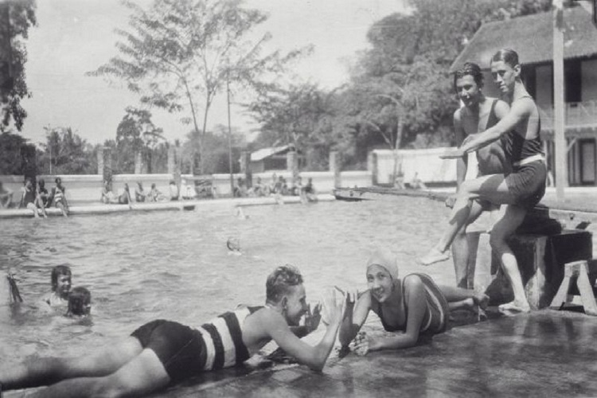

Sekitar Tahun 1987-an satu demi satu rumah tinggal dikawasan ini berpindah tangan baik secara sistim beli maupun sewa. Perpindahan tangan tersebut ternyata menandai dimulainya kawasan Cihampelas sebagai salah satu tempat yang mencirikan kota Bandung, selain Cibaduyut sebagai kawasan sepatu.
Kehidupan Cihampelas berubah, karena ternyata wisata dan pariwisata bukan hanya dapat menyuguhkan keindahan alam atau kekayaan suatu daerah, melainkan segala potensi yang layak dijual.
Kawasan Jeans di Cihampelas sendiri gebrakannya dimulai pada tahun yang sama dengan berdirinya satu buah toko. Setelah dirasakan reaksinya bagus, kemudian mereka mengajak rekan-rekan dari pengusaha pabrik dan distributor untuk membuka usaha ditempat ini. Semakin besar minta pengusaha yang ingin membuka toko menyebabkan banyak rumah tinggal yang dikomersilkan.
"Kalau orang menyebut nama ini yang terbayang adalah satu kawasan jeans dengan segala atribut dan keramaiannya. Cihampelas sendiri tampaknya telah memantapkan diri sebagai salah satu karakteristik kota Bandung.
Cerita Cihampelas dengan jeansnya, semua orang telah mengenalnya. Tapi kalau kemudian timbul pertanyaan, seperti apa Cihampelas tempo dulu, bagaimana pendduduknya lalu kenapa dinamakan Cihampelas, satu pengetahuan lain tentunya."
Salah satu jalan yang paling banyak menampung wisatawan lokal dan internasional. Jalan Cihampelas. Pola penamaan jalan ini terbentuk melalui dua aspek : Hidrologis dan biologis. Cihampelas berasal dari gabungan dua kata.
1. Ci = Cai, yang artinya air (Sunda)
2. Hampelas = Nama jenis pohon yang daunnya kasar, seperti kertas amril (ampelas) yang digunakan untuk menggosok atau menghaluskan besi dan kayu. Dengan demikian, Cihampelas jika diartikan secara bebas dapat memiliki dua pengertian. Pertama, air yang memiliki khasiat untuk menghaluskan kulit atau membersihkan hal lainnya. Kedua, sebuah daerah aliran sungai yang disekitarnya terdapat banyak pohon Hampelas.
Mengenal Cihampelas tempo dulu terutama awal terbentuknya kawasan ini tidak terlepas dari sejarah perjalanan kota Bandung. Pada masa pemerintahan Hindia Belanda, Cihampelas yang termasuk dalam kawasan Bandung Utara dikondisikan untuk pemukiman orang Eropa. Pada masa itu gedung-gedung gaya romantik Belanda banyak berdiri dikawasan ini.
Pemandian Tjihampelas adalah kolam renang tertua di Bandung.

"Penamaan kawasan dan jalan dengan nama Cihampelas diambil berdasarkan nama kolam pemandian yang ada di daerah ini, yakni kolam pemandian Cihampelas.
Pada saat pembuatan kolam, disekitar tempat tersebut banyak terdapat pohon Hampelas (sejenis pohon berdaun kasar dan bisa digunakan sebagai penggosokI. Sumber air yang digunakan untuk mengisi kolam berasal dari sekitar pohon tersebut hampelas tersebut."
Kolam renang ini semula merupakan kolam ikan milik Maria Homann (Istri dari Adolf Homann, pemilik hotel Homann). Kolam renang dibangun secara sederhana pada tahun 1904. Letak kolam di sisi jalan kecil Tjihampelaslaan (kini Jl Taman Hewan) yang menghubungkan Lembangweg (kini Jl Cihampelas) dan Ghijselsweg (kini jl Tamansari). Kolam renang ini terkenal karena airnya berasal dari mata air yang banyak ditemukan di tepi Sungai Cikapundung. Sejak awalnya kolam renang sederhana tersebut dilengkapi dan dimodernisasi beberapa kali.
Sejak tahun 2007, pemandian ini ditutup untuk umum secara bertahap dikarenakan mahalnya perawatan dan pemeliharaan pemandian tersebut sehingga kepemilikannya berpindah kepada pengusaha yang rencananya akan membangun sebuah hotel. belum diketahui apakah pemandian Cihampelas direhab atau dibongkaryang. Mungkin pemandian tersebut akan menjadi pemandian Hotel.